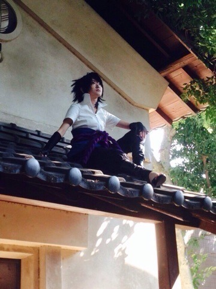

| 2014/12 02 Tue | (；д；)感動。 |
皆さんおはようございます！
今日のめざましテレビ見ましたか〜⁈
なんとなんとなんとなんとなんと！！
わたくし、生駒里奈。
岸本斉史先生にインタビューさせて頂いたのです！！！
ずーっとウキウキワクワク！
ふぁっふぁしてた！
スケジュールに
生駒
めざましテレビ岸本先生インタビューと書いてあり。
前日の夜は興奮でガチで眠れなくて。
当日は朝からお仕事で、でも心の60%はもうインタビューの事を考えていて。
時間がきて、岸本先生のお仕事部屋につき、
スタンバイまで待機って言われたので待っていたんですけど、緊張し過ぎて涙が溢れてきました。
こんなに緊張したの初めてでした。
実は、去年のジャンフェスでお会いしたのですが、その時は竹内さんなどなど神様が沢山いらっしゃって目を開けるのが眩しくて出来ないくらいだったのです。
そしてご対面！！
光栄です！！
それしか言えなかった。
涙がどんどん溢れてきて。
凄く嬉しかった！！
でもいこまみたいな人間がこんな神聖な所に来ていいのか？
岸本先生に会っていいのか⁈
と不安も混じった涙でしたが、
スタッフさん岸本先生ごめんなさい〜(；д；)と言っていたら
ティッシュを下さった！！
テレビで見た⁈
岸本先生がティッシュを下さった！！
感動。
漫画の事を話したり、インタビューも沢山したり、夢の様な時間でした。
映画の話もカメラが回ってない時にちょいちょいしたり、私が岸本先生に伝えたい事、ファンが伝えたい事、岸本先生への感謝を言えたかな⁈
っと思います！！
この日は一生忘れない！！
岸本先生、めざましテレビのスタッフの皆さん！
生駒にこんな素晴らしい機会を与えて下さってありがとうございました！！
NARUTO、
映画楽しみですね

来年の短期集中連載も楽しみ
これからもNARUTOを見て頑張るぞ！

生駒、サスケになってみた。
趣味を理解して頂けるって本当にありがたいです。
私は私のまま貫きたいと思います。
とりあえず！！
報告したかったヽ(・∀・)ノ
へばなっ☆彡
コメント(608)
2014/12/02 08:54